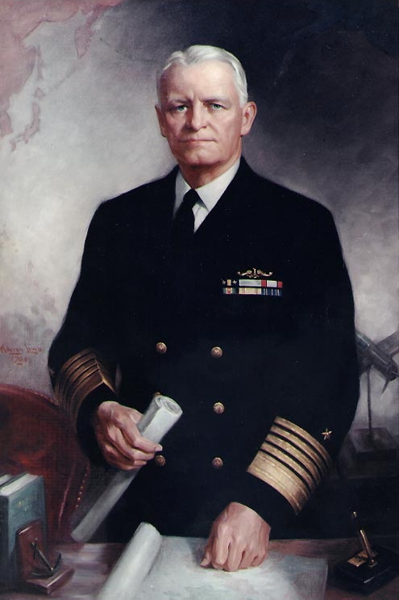
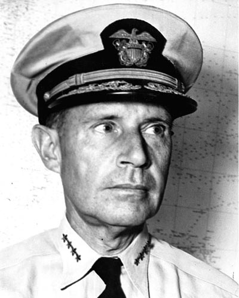
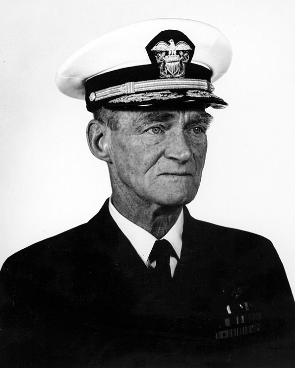
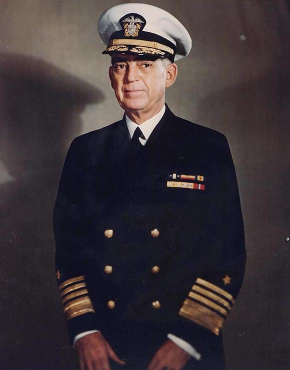
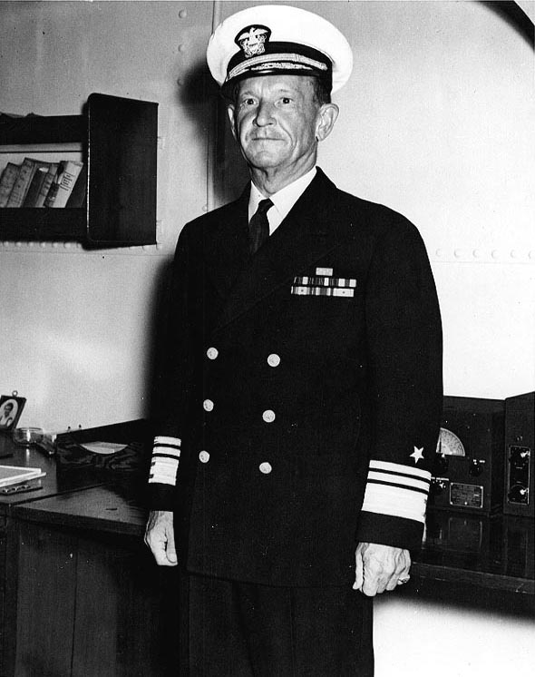

Проект по XML програмиране: "Самолетоносач"
Битки, в които е участвал самолетоносач USS „Ентърпрайз“ (CV-6)

Честър Нимитц
Честър Нимитц е адмирал от Съединените американски щати.
В началото на Втората светона войната е бил на 57 години. Участва в следните битки от тихоокенаския театър
на военните действия във войната: Пърл Харбър,
Битка при Мидуей,
Битката за Иво Джима,
Битка в Коралово море,

Реймънд Шпруанс
Реймънд Шпруанс е адмирал от Съединените американски щати.
В началото на Втората светона войната е бил на 56 години. Участва в следните битки от тихоокенаския театър
на военните действия във войната: Битка при Мидуей,
Битката при островите Санта Круз,

Марк Митчър
Марк Митчър е адмирал от Съединените американски щати.
В началото на Втората светона войната е бил на 55 години. Участва в следните битки от тихоокенаския театър
на военните действия във войната: Пърл Харбър,
Битката за Иво Джима,

Томас Кинкейд
Томас Кинкейд е адмирал от Съединените американски щати.
В началото на Втората светона войната е бил на 54 години. Участва в следните битки от тихоокенаския театър
на военните действия във войната: Пърл Харбър,
Битката при островите Санта Круз,

Франк Флетчър
Франк Флетчър е адмирал от Съединените американски щати.
В началото на Втората светона войната е бил на 57 години. Участва в следните битки от тихоокенаския театър
на военните действия във войната: Битка в Коралово море,
Изработено от Михаил Жеков, фн. 24469